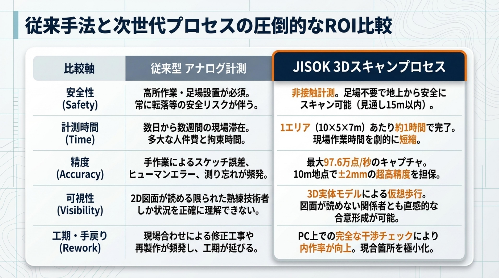

STEP 01 — Survey
まず、現場を丸ごとスキャン
FARO Focusレーザースキャナーで、プラント全体を点群データとして取得します。足場は不要。非接触で安全に、1エリア約1時間でスキャンが完了します。
- 非接触計測で足場仮設が不要、安全性を大幅に向上
- 10m地点で±2mmの超高精度を担保
- 従来の手作業計測と比較し、現場作業時間を最大80%短縮
- IP54準拠で粉塵・水滴環境下でも安定稼働

プラントの計測から設計・施工検証まで。3Dスキャンを起点に、ワンストップでお手伝いします。
FARO Focusレーザースキャナーで、プラント全体を点群データとして取得します。足場は不要。非接触で安全に、1エリア約1時間でスキャンが完了します。
取得した膨大な点群データを、Autodesk ReCapで統合・構造化。ノイズを除去し、設計にそのまま使える高品質なデータセットを作ります。
Plant 3DやRevitを使い、点群データから精密な3Dモデルを作成。配管・ダクト・構造体をBIM化し、既存図面との整合性もチェックします。

Navisworksで仮想空間上の干渉チェック。新設配管と既設設備がぶつからないか、施工前にPC上で確認できます。手戻り工事をなくします。
スキャンデータはデジタルツインとして、完工後の維持管理にも活用。定期スキャンで設備の経年変化も把握できます。

導入による効果を5つの観点で比較します。
| 比較項目 | 従来手法 | JISOK 3Dスキャン |
|---|---|---|
| 安全性 | 足場設置・高所作業が必要 作業員の落下リスクあり |
非接触計測で足場不要 安全性を大幅に向上 |
| 計測時間 | 数日〜数週間 | 1エリア約1時間 工期を最大80%短縮 |
| 精度 | 手作業による計測誤差 数cm単位のばらつき |
±2mmの高精度 97万点/秒の高密度データ |
| 可視性 | 2D図面ベース 空間把握が困難 |
3Dモデルで直感的に把握 関係者間の合意形成が容易 |
| 手戻り | 施工後に干渉が発覚 高コストな修正工事 |
事前の干渉チェックで 手戻りを大幅削減 |